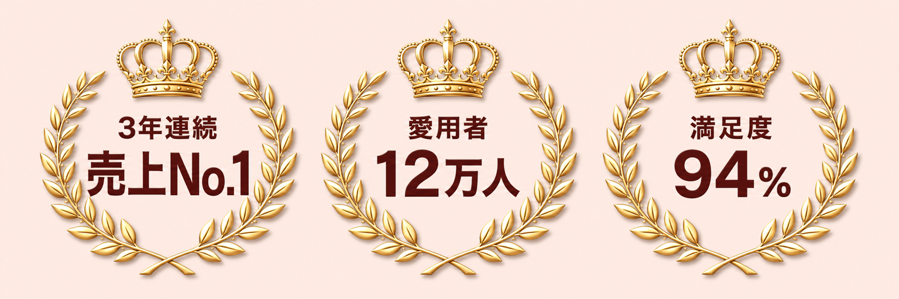
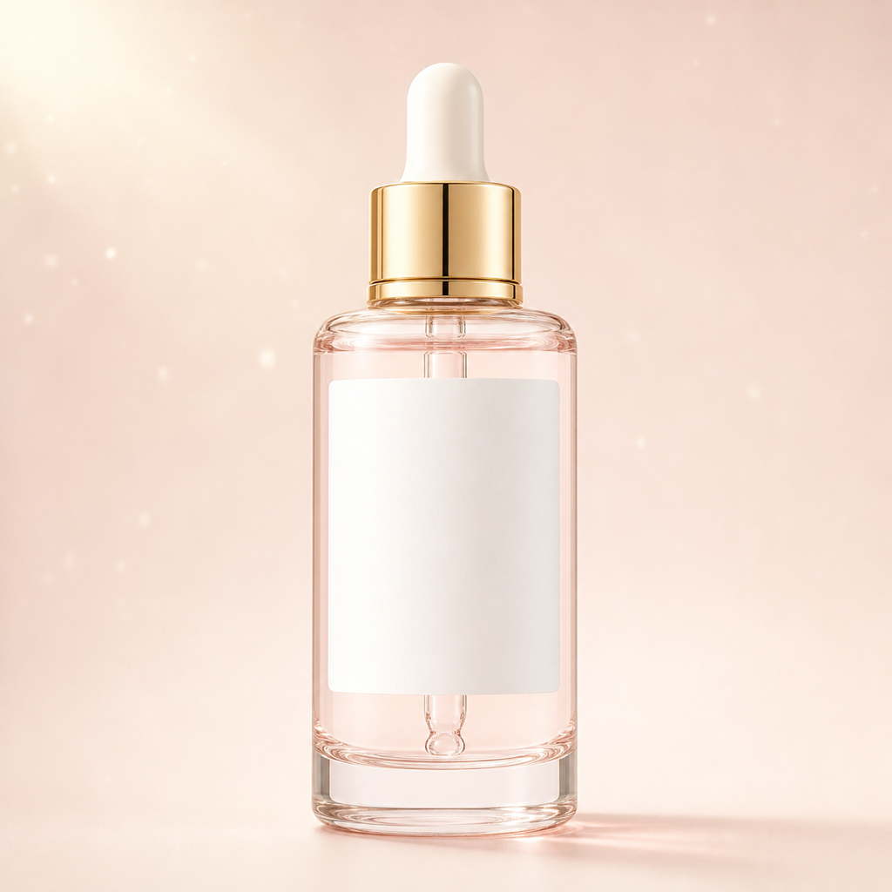
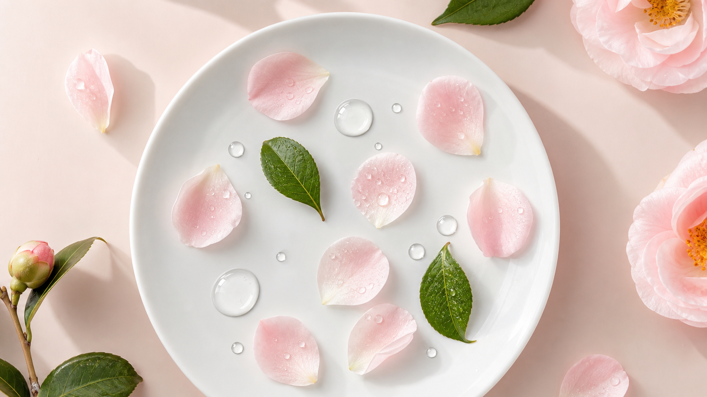
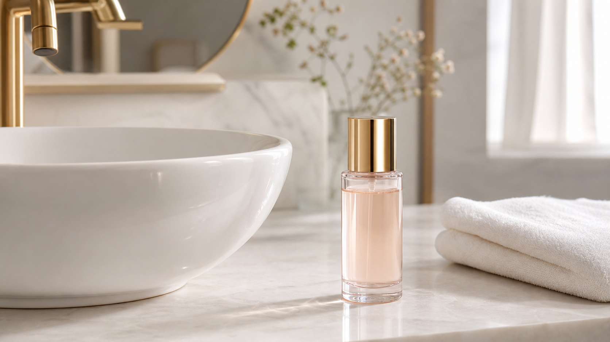
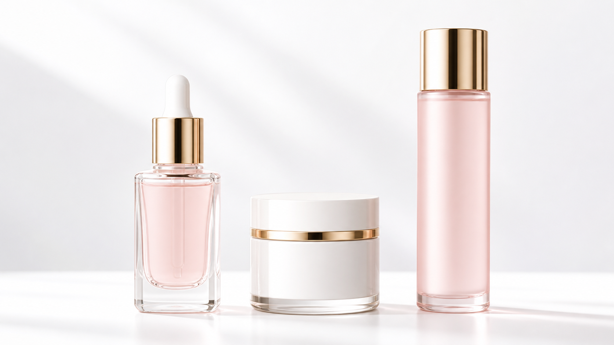

夕方になると、
化粧がのらなくなってきた肌に。
YEON リバイタライジング セラム〈美容液・化粧品〉


美容液 10mL（約7日分）＋ 携帯ポーチ
送料無料／お一人さま1回限り／定期購入の縛りはありません
※1 ◯◯総研調べ。韓国発スキンケア美容液市場（国内流通・オンライン含む）2023年1月〜2025年12月 YEONブランド 金額シェア。／※2 2019年3月〜2026年6月の累計出荷本数を1人1本として換算した数値。／※3 自社調べ。2026年3月実施、20〜40代の女性120名によるモニターアンケート（使用4週間後）。個人の感想であり、効果を保証するものではありません。／その他の注記はページ下部に記載しています。
※このページはデザイン見本です。ブランド名・数字・価格・受賞歴はすべて架空のサンプルです。
スキンケアは、
足すほど良くなるとは限りません。
重ねるほど、肌の上で何が効いているのか分からなくなる。YEONは、一本で完結させる設計にしました。化粧水のあと、これだけ。工程を減らしても、うるおいで満たされた肌※3へ導きます。
※すべて架空のサンプルです。実際の制作では、確認できた事実の数字だけを入れます。
その正体は、
かくれ乾燥かもしれません。
表面はうるおって見えるのに、角層の内側がうるおい不足になっている状態を、YEONは「かくれ乾燥」と呼んでいます。この状態では角層がかたくなり、あとから何をのせても入りにくくなります。私たちが最初に取り組んだのは、この「入りにくさ」でした。
※「かくれ乾燥」はYEONによる呼称です。医学用語ではありません。
うるおいが行き渡った角層が、
肌の表面に、うすい光をつくる。
頬に手をあてたとき、指がすっと止まらずに滑る。光が一点で跳ねずに、面でやわらかく広がる。その状態を、YEONは「水の膜」と呼んでいます。特別な肌になることではなく、うるおいが足りている状態に戻すこと。私たちが十五年、そこだけを見てきました。
※「水の膜」はYEONによる呼称です。
とろみのあるテクスチャーが、体温でほどけて薄い膜のように広がります。べたつきを残さず、次の工程を待たせません。朝のメイク前にも使えます。

保湿成分をナノサイズにまで小さくし、角層へなじみやすく設計しました※7。うるおいが行き渡ることで、肌はやわらかくととのいます。ハリ感※8のある肌印象へ。

美容液・乳液・保湿クリームの役割を、一本にまとめました。化粧水のあと、これだけで完了します。続けられる形にすることが、いちばん難しく、いちばん大切だと考えました。
冬に咲き、
寒さのなかで実を落とす。
椿は、厳しい季節に花をつけます。その種子から採れる油は、古くから髪や肌の手入れに使われてきました。YEONは、この椿の種子を発酵させることから始めました。発酵によって分子が小さくなり、肌へなじみやすくなります※7。
収穫した椿の種子を、低温で圧搾。熱による変質を避け、成分をそのまま取り出します。
独自の酵母で14日間かけて発酵※10。分子を小さくし、なじみやすい形へ変えます。
セラミドNP、ヒアルロン酸Naと組み合わせ、うるおいが長くとどまる設計にしています。
※製法・日数はすべて架空のサンプルです。
※11 自社調べ。2026年3月実施、20〜40代の女性120名によるモニターアンケート（使用4週間後）。個人の感想であり、効果を保証するものではありません。
※12 公式オンラインストアのレビュー平均（2026年6月末時点・件数328件）。
※これらの数字はすべて架空のサンプルです。実際の制作では、確認できた調査結果だけを、実施時期・対象・人数を明記して使います。
洗顔後、いつもお使いの化粧水で肌を整えてください。肌が湿っているうちに次へ進みます。
スポイトで2〜3滴とり、手のひらで軽く温めます。体温でとろみがほどけ、のばしやすくなります。
こすらず、手のひら全体で押さえるようになじませます。乾燥が気になる部分は重ねてください。
乳液・クリームは不要です。朝はこのあとメイクへお進みいただけます。

本品。化粧水のあと、これ一本で完了します。まずはこちらから。
約3か月分※9。続けてお使いの方は、こちらが1mLあたり約12%お得です。
ボトルをお持ちの方向けの詰め替え用。容器の分だけ価格を抑えています。
夜に4つ塗っていたのが、化粧水とこれだけになりました。続けられる形になったのが大きいです。
とろみがあるので朝は無理かと思っていました。のばすと軽くなって、下地がふつうに乗ります。
香りが強いものが苦手で。本当に香りがないので、夜に使っても気になりません。
※お客様の声も架空のサンプルです。実際の制作では、許可をいただいた本物の声だけを、個人の感想である旨とあわせて掲載します。
すべての肌質の方にお使いいただける処方ですが、すべての方に肌トラブルが起きないわけではありません。ご心配な方は、目立たない部分でパッチテストをしてからお使いください。
はい。化粧水のあとにお使いください。乳液・クリームは重ねなくても大丈夫ですが、乾燥が強い季節は重ねていただいても問題ありません。
お使いいただけます。べたつきが残りにくい設計ですので、このあとメイクへお進みいただけます。
感じ方には個人差があります。モニター調査では平均2週間※11でしたが、肌の状態や季節によって変わります。まずは1本を使い切ることをおすすめしています。
品質を保つため、開封後は3か月以内を目安にお使いください。直射日光と高温多湿を避けて保管してください。